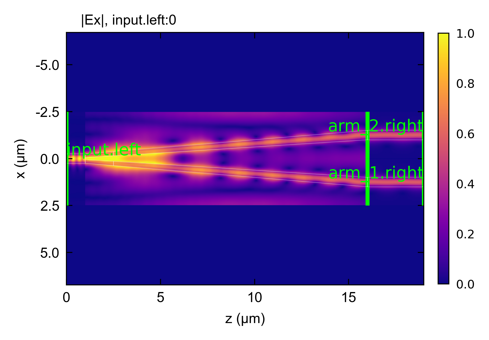

EME: Y-Branch
A Y-branch splits one guide into two. Here a 500 x 220 nm Si wire in SiO2 at 1550 nm splits into two 500 nm cores that separate over 15 um. The splitter is drawn as two halves of the input core that widen and move apart, so it is a taper_section between two profiles of two cores each. Each output guide is its own section, wired to a window over its core on the splitter’s end, so the circuit branches rather than running from one end to the other. A real tip cannot come to a point, so the two halves start 100 nm apart, about the smallest gap a lithography process resolves.
Highlighted features: a Port with a window on each core of a taper’s end, connect_ports to wire a branching circuit, and plot(view='layout'), which reconstructs the field arm by arm, draws each arm where the layout places it, and marks the ports with thick lines.
The light splits evenly between the two outputs, by symmetry. Most of the loss comes from the blunt tip: the input mode meets an abrupt gap where its field is strongest, which scatters and reflects part of the light, so a finite tip costs a few tenths of a dB that an ideal sharp tip would not. A narrower gap lowers the loss, which is why fabricated Y-branches push the tip to the limit of the process. The abrupt step also scatters into many modes, so the splitter keeps more modes than a smooth taper would need.
The splitter is a staircase of cross-sections, and its slicing decides how much it reflects. The tip, where the mode changes fastest, is sliced finely. Elsewhere the steps are kept shorter than half a wavelength in the guide, since steps of equal length a little longer than that form a grating whose reflections add up. Solving the splitter on its own, with every mode kept, checks that the slicing is fine enough.
The window has metal walls and boundary_condition='00'. The structure is symmetric about x = 0, but a pair of masks is not yet recognized as symmetric, so a fold is not applied to it.
This code example is licensed under the BSD 3-Clause License.
import sys
import time
import numpy as np
import emodeconnection as emc
from emodeconnection import Port, Bounds
## A Si wire Y-branch: one 500 nm guide splits into two that separate to
## 2.5 um apart over 15 um, and each continues as its own output guide. The
## splitter is a taper between two profiles of two cores, and each output
## guide is wired to its own window on the splitter's end.
## Set simulation parameters
wavelength = 1550 # [nm] wavelength
dx, dy = 50, 50 # [nm] resolution
w_core = 500 # [nm] waveguide core width
h_core = 220 # [nm] waveguide core height
h_clad = 1090 # [nm] cladding below and above the core
d_arm = 1250 # [nm] each output guide's distance from the axis
tip_gap = 100 # [nm] the gap between the two halves at the tip, the smallest a lithography resolves
window_width = 4 * d_arm # [nm] the splitter's window, two output windows wide
window_height = h_core + 2*h_clad # [nm]
num_modes = 24 # [-] number of modes in the splitter
tip_length = 1500 # [nm] where the two halves are closest
split_length = 15000 # [nm] the whole splitter, tip included
arm_length = 3000 # [nm]
num_arm_modes = 4 # [-] number of modes in each output guide
## A real tip cannot come to a point, so the two halves start tip_gap apart.
## At the tip the two halves have just come apart, and the mode changes faster
## than anywhere else, so the tip gets its own, more finely sliced, section. The
## two sections of the splitter are each sliced into steps shorter than half a
## wavelength in the guide, so the steps cannot reflect in phase.
tip_settings = {'schedule_change_per_slice': 0.001, 'schedule_max_slices': 320}
split_settings = {'schedule_change_per_slice': 0.005, 'schedule_max_slices': 320}
def halves(z):
"""Width and center of each of the two cores, a distance z along the splitter.
At the tip the two halves fill the input guide's width but for a gap of
tip_gap between them, and they widen and move apart linearly from there.
"""
t = z / split_length
w0, c0 = (w_core - tip_gap)/2, (w_core + tip_gap)/4
return w0 + t * (w_core - w0), c0 + t * (d_arm - c0)
def start(name):
"""Open a session with the input guide and the splitter's three cross-sections."""
em = emc.EMode(emode_cmd=sys.argv[1:], simulation_name=name)
em.settings(
wavelength=wavelength, x_resolution=dx, y_resolution=dy,
window_width=window_width, window_height=window_height,
num_modes=num_modes, boundary_condition='00', background_material='SiO2')
em.shape(name='BOX', material='SiO2', height=h_clad)
em.shape(name='core', material='Si', height=h_core, etch_depth=h_core, mask=w_core)
em.label_profile(name='input')
## At z = 0 the input guide meets the blunt tip: two halves tip_gap apart
for label, z in (('y_start', 0), ('y_tip', tip_length), ('y_end', split_length)):
width, center = halves(z)
em.shape(name='core', mask=[width, width], mask_offset=[-center, center])
em.label_profile(name=label)
em.straight_section(name='input', profile='input', length=1000)
em.taper_section(name='tip', profile='y_start', profile_end='y_tip',
length=tip_length, settings=tip_settings)
return em
## Part 1: the splitter on its own, ending on the full window. Every mode of the
## window is kept, so the power that leaves through its two ports is the check
## that the splitter is resolved.
em = start('y_splitter')
em.taper_section(name='split', profile='y_tip', profile_end='y_end',
length=split_length - tip_length, settings=split_settings)
start_time = time.time()
S = em.EME()
splitter_time = time.time() - start_time
launched = S.block(['left', 'right'], 'left')[:, 0]
splitter_balance = np.sum(S.mode_power * np.abs(launched) ** 2) / S.mode_power[0]
splitter_T = np.abs(S.block('right', 'left')[0, 0]) ** 2
em.close()
## Part 2: the Y-branch. A window over each core on the splitter's end is its
## own port, and each output guide is connected to one of them.
em = start('y_branch')
window = lambda x: Bounds(window_width=2 * d_arm, window_height=window_height, offset=(x, 0.0))
em.taper_section(
name='split', profile='y_tip', profile_end='y_end',
length=split_length - tip_length, settings=split_settings,
ports=[Port(name='arm_1', side='right', window=window(d_arm)),
Port(name='arm_2', side='right', window=window(-d_arm))])
em.settings(window_width=2 * d_arm, num_modes=num_arm_modes)
em.shape(name='core', mask=w_core, mask_offset=0)
em.label_profile(name='arm')
em.straight_section(name='arm_1', profile='arm', length=arm_length)
em.straight_section(name='arm_2', profile='arm', length=arm_length)
em.connect_ports(pairs=[('input.right', 'tip.left'), ('tip.right', 'split.left'),
('split.arm_1', 'arm_1.left'), ('split.arm_2', 'arm_2.left')])
start_time = time.time()
S = em.EME()
branch_time = time.time() - start_time
## Transmission into the fundamental mode of each output guide, the reflection
## into every mode of the input, and the power that leaves through every port
T_1 = np.abs(S.block('arm_1.right', 'input.left')[0, 0]) ** 2
T_2 = np.abs(S.block('arm_2.right', 'input.left')[0, 0]) ** 2
## mode_power holds the power each mode carries, in the order of the rows of S
column = S.port_slices[S.port_index('input.left')].start
launched = np.abs(S.data[:, column]) ** 2 * S.mode_power / S.mode_power[column]
power_out = np.sum(launched)
reflection = np.sum(launched[S.port_slices[S.port_index('input.left')]])
print(f'\nsplitter alone: T into the even mode {splitter_T:.5f}, '
f'power out {splitter_balance:.5f}, {splitter_time:.1f} s')
print(f'Y-branch: {branch_time:.1f} s')
print(f'output 1: {T_1:.5f}')
print(f'output 2: {T_2:.5f}')
print(f'split ratio (1/total): {T_1 / (T_1 + T_2):.5f}')
print(f'excess loss: {-10 * np.log10(T_1 + T_2):.4f} dB')
print(f'reflection: {reflection:.1e}')
print(f'power out of every port: {power_out:.5f}')
## The field, drawn where the layout places each section, with the ports
em.plot(component='Ex', plot_function='abs', plane='z-x', view='layout',
file_name='y_branch_field', file_type='png')
em.close()
Console output:
EMode3D 1.0.7 - email
Solving S-matrices...
Solving section: input... completed in 0.0 sec
Solving section: tip... completed in 11.2 sec
Solving section: split... completed in 26.7 sec
completed in 40.0 sec
Exited EMode
EMode3D 1.0.7 - email
Solving S-matrices...
Solving section: input... completed in 0.0 sec
Solving section: tip... completed in 11.2 sec
Solving section: split... completed in 26.8 sec
Solving section: arm_1... completed in 0.0 sec
Solving section: arm_2... completed in 0.0 sec
completed in 40.0 sec
splitter alone: T into the even mode 0.86127, power out 0.99972, 40.6 s
Y-branch: 41.1 s
output 1: 0.43063
output 2: 0.43063
split ratio (1/total): 0.50000
excess loss: 0.6486 dB
reflection: 3.9e-02
power out of every port: 0.90284
Exited EMode
Figures:
